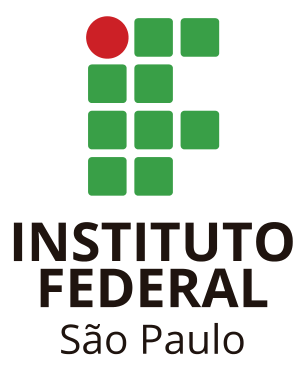

Campus Guarulhos
Campus Guarulhos



Coordenadoria de Ações Internacionais - IFSP Campus Guarulhos
Atualizado em 2026Promover a internacionalização do ensino, pesquisa e extensão no IFSP Guarulhos, conectando estudantes, docentes e técnicos administrativos com instituições parceiras ao redor do mundo, fortalecendo a formação acadêmica e o intercâmbio cultural.
"A internacionalização da educação superior é um meio para melhorar a qualidade da educação e da pesquisa." — Jane Knight
A Comissão de Relações Internacionais do IFSP Guarulhos coordena e impulsiona as iniciativas de cooperação acadêmica internacional, mobilidade estudantil e docente, parcerias institucionais e projetos de pesquisa conjuntos.


IFSP Guarulhos e Instituición Universitaria Pascual Bravo, Medellín. Novembro de 2025 — cooperação acadêmica e cultural que transcende fronteiras.
Missão Internacional Brasil-Colômbia 2025 — Cerimônia oficial de abertura no IFSP Guarulhos com delegação da Instituición Universitaria Pascual Bravo (Medellín). Incluiu visitas técnicas, seminários de pesquisa e atividades culturais.
📸 Fotos e vídeos disponíveis no Flickr oficial.
Missão oficial em Barranquilla, Colômbia — Representantes da SMRI-SP participaram do Fórum de Desenvolvimento Local da OCDE.
Mobilidade para Portugal — 11 alunos selecionados pelo Edital 52/2024 para programa de mobilidade internacional no Porto.
Mobilidade acadêmica — Instituto Politécnico de Bragança — Três estudantes de Engenharia de Controle e Automação estudaram em Portugal.
Programa PEC-G — Sicer Manuel Maquengo Vaz Bandeira (São Tomé e Príncipe) cursa Engenharia de Controle e Automação.
Capacitação em idiomas — Servidores no Canadá via ILSC. Plataforma Altíssia beneficiou 38 pessoas.
O Campus Guarulhos mantém acordos e parcerias com instituições de ensino e pesquisa no exterior.
Memorando de Entendimento com Pascual Bravo, viabilizado pelo Prof. Dr. Wilson Carlos da Silva Junior.
📢 Oferta Nacional de Cursos de Idiomas
IFSP integra Oferta Nacional de Cursos de Idiomas.
📥 Baixar Cartaz📢 Exame EPLI - English Proficiency Level International
Certificação internacional de proficiência em inglês para estudantes e servidores do IFSP.
📥 Baixar Cartaz📢 Mobilidade Estudantil International 2027-1

IFSP abre 64 vagas para mobilidade internacional em Portugal, México, Espanha e Chile
📋 Edital 27/2026"A Institución Universitaria Pascual Bravo, tem uma grande sinergia com o IFSP, temos realizado valiosa troca de experiências de pesquisa e educacionais, que unem estudantes e docentes."
— Prof. Dr. Wilson Carlos da Silva Junior
"A sala de aula se torna um espaço multicultural, desenvolvendo a consciência global de cada um."
— Profa. Ms. Elizabete Rubliauskas Giachetti
"A troca de experiências e conhecimentos entre instituições de diversos paises sempre foi um pilar para o desenvolvimento da pesquisa."
— Prof. Dr. Dennis Lozano Toufen
"Receber os alunos, alunas, professores e professoras da Universidade Pascual Bravo foi uma experiência bastante proveitosa, pois foi possível abrir o horizonte das nossas pesquisas. Os nossos alunos ficaram maravilhados com o intercâmbio de saberes com a visita recebida!"
— Prof. Dr. Marcelo Kenji Shibuya
"A ação em conjunto com a Pascual Bravo teve um impacto significativo na vida acadêmica de todos os participantes."
— Maria Eduarda Alves Selvatti - Engenharia da Computação